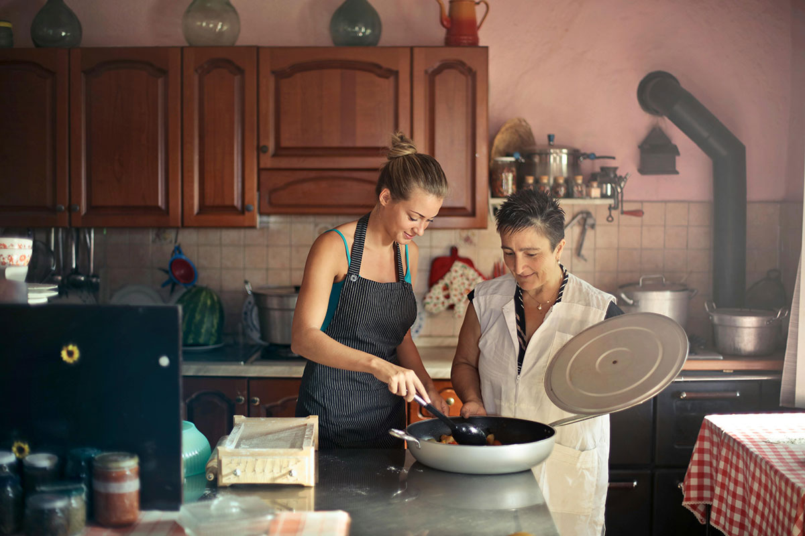
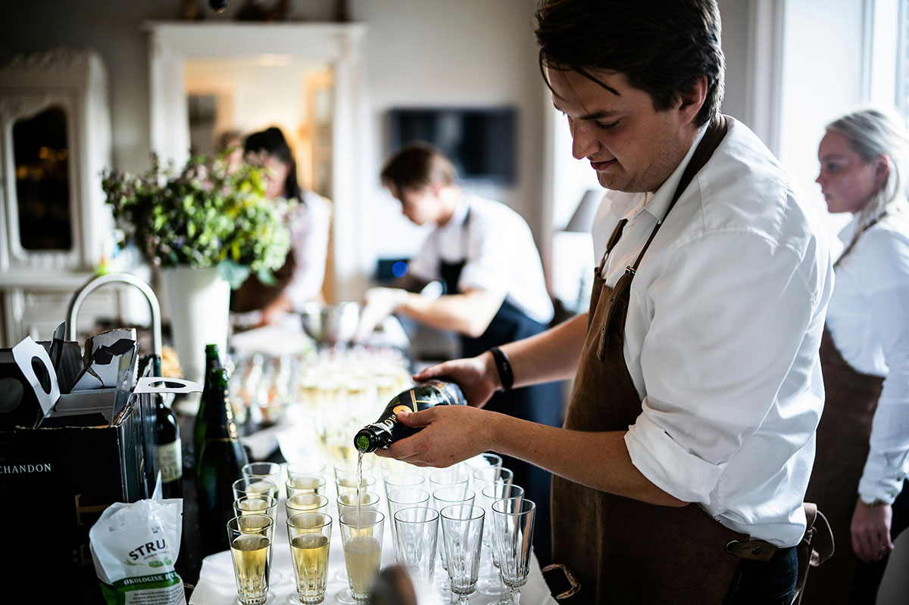

About Us
Welcome to Little Lemon, a charming lemon-themed restaurant that has been a proud family business for three generations. Our journey began in the picturesque orchards, where we handpick the finest lemons to bring you the freshest and most flavorful dishes.
At Little Lemon, we believe in the power of family recipes passed down through the years. Every dish on our menu is crafted with love and a dash of tradition. Join us on a culinary adventure that combines the warmth of family with the zest of freshly harvested lemons.
>>Reserve a Table<< The Staff
Meet our dedicated team at Little Lemon, where passion for food and a commitment to excellence converge. Our chefs, with years of experience, bring creativity to every dish, ensuring a delightful dining experience for you and your loved ones.
The friendly faces you see when you walk through our doors are more than just staff – they are an extension of our family. We take pride in providing exceptional service, making your visit a memorable one.
>>Reserve a Table<< Opening Hours
We understand that life gets busy, so we've tailored our opening hours to accommodate your schedule. Join us for a leisurely brunch, a quick lunch, or a relaxing dinner – whenever suits you best.
Monday to Friday: 11:00 AM - 9:00 PM
Saturday and Sunday: 10:00 AM - 10:00 PM